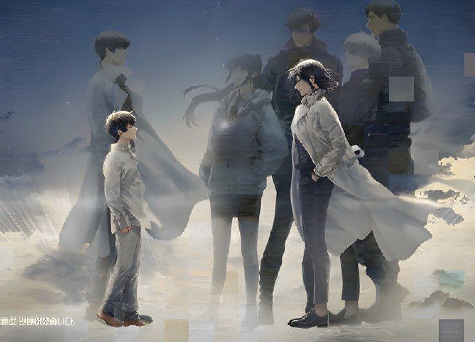

Han Sooyoung was a writer before the scenarios began. Once the story started she was a selfish survivor. Prioritizing her own saftey over others, always acting alone.
However, for reasons unknown at the time the scenarios followed the story she wrote "SSSSS-Grade Infinite Regressor" which was in her oppinion the better version of "Ways of Survival".
Sooner or later when she met the person who accused her of plagarism pre-scenarios, Kim Dokja, she was forced to team up with him and eventually became one of the main party members.
Eventually she grew a liking to his personality and using her quick thinking and wit she became the leader of the party when Kim Dokja was not around.
This chapter reveals the background of Han Sooyoung before the scenarios. It explains all the weird things about her character while also showing how much she cares about Kim Dokja.
Her present self in the disasters went back into the body of her younger self with the intent to find and stop the writer of "Ways of Survival" into writing the story to prevent the damage
caused by the story. However, upon realizing that Dokja would've given up on life without the novel she decides to write the novel herself and become the one who brought the scenarioss upon the world.

"Han Sooyoung dazedly stared at her own hands.
⸢'That novel saved me. So, I should pay my debt to its protagonist.'⸥
The way to... save Kim Dokja."
Unique Abilities and Attributes
Author
Obtained through her hobby of writing light novels. It contributed to the creation of her other abilities.
Avatar
Allows the user to clone themselves in return of giving the clone a certain piece of their memories. The more important the memory given
the stronger the clone. A person can be split up to 51% and 49% which was shown when Kim Dokja used this ability through [Bookmark].
Predictive Plagarism
Allows Han Sooyoung till see the future by having multiple clones of herself in her head run through those ideas. Allows her to create
plans and tactics to allow her teamates to easily clear scenarios while minimizing damage. She gained this ability from one of clones
who gained too much memories and went out of control. She used it in order to look for the 51% of Kim Dokja by regressing.
Advent of the Half-God (sponsored)
An ability given to her by her sponsor, "Abyssal Black Flame Dragon", which allows her sponsor to temporarily gain control of her body
and use his ability to the fullest. She needs to recite a hilariously long incantonation in order to use this. Uses up the majority of her
energy after the ability is canceled.